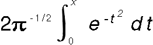

Syntax
#include <math.h> double erf(double x); double erfc(double x);Description
erf calculates the error function of erfc computes the value of 1.0 - erf(x). erfc is used in place of erf for large values of x.
erf returns a double value that represents the error function. erfc returns a double value representing 1.0 - erf.
This example uses erf and erfc to compute the error function of two numbers.
#include <stdio.h>
#include <math.h>
double smallx,largex,value;
int main(void)
{
smallx = 0.1;
largex = 10.0;
value = erf(smallx); /* value = 0.112463 */
printf("Error value for 0.1: %lf\n", value);
value = erfc(largex); /* value = 2.088488e-45 */
printf("Error value for 10.0: %le\n", value);
return 0;
/****************************************************************************
The output should be:
Error value for 0.1: 0.112463
Error value for 10.0: 2.088488e-45
****************************************************************************/
}
Related Information